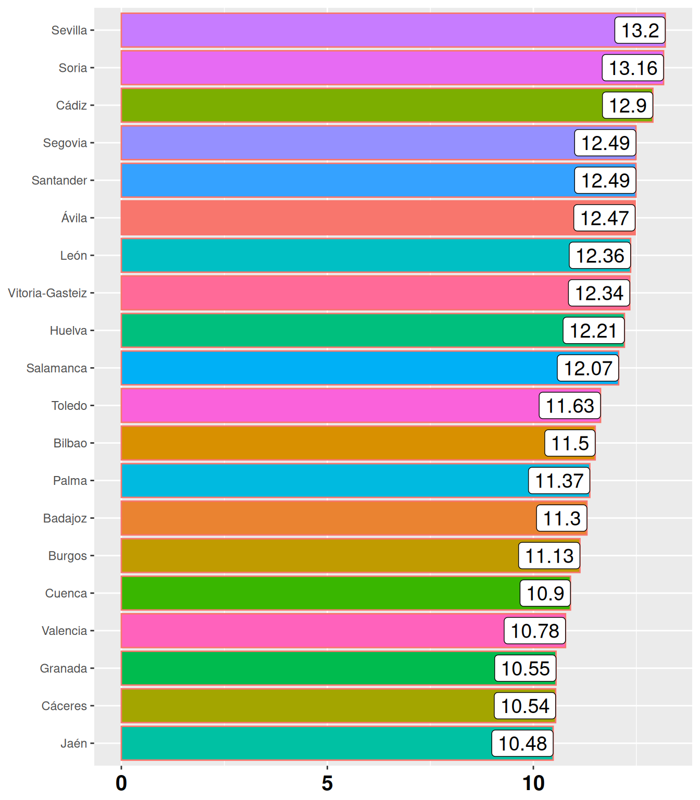
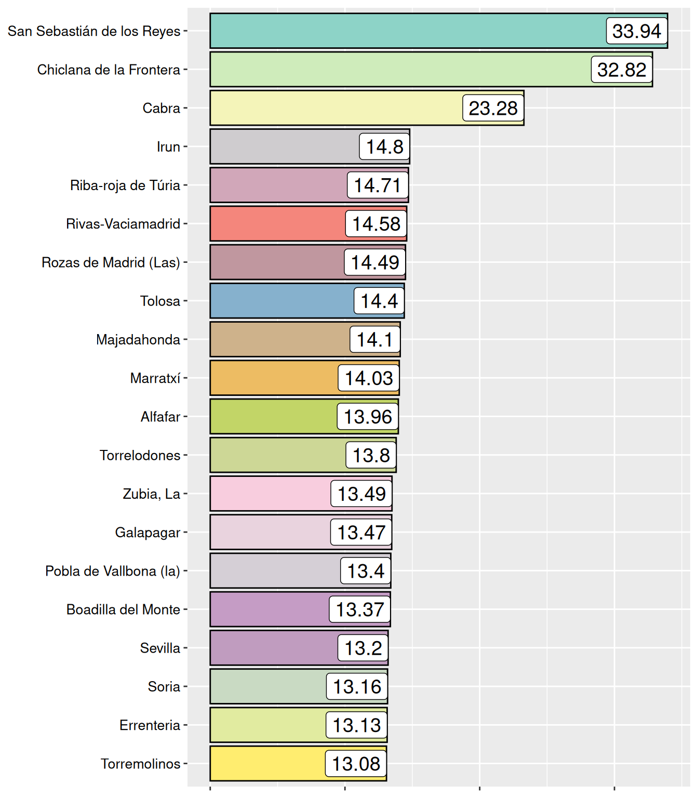

Estafas Informáticas
José Luis Ahedo
Licenciado en Psicología.
Especialista en Criminología.
Máster en Mediación.
Capitales de Provincia
Tasa de delitos por cada 1000 hab.
MUNICIPIOS
Tasa de delitos por cada 1000 hab.

Licenciado en Psicología.
Especialista en Criminología.
Máster en Mediación.

